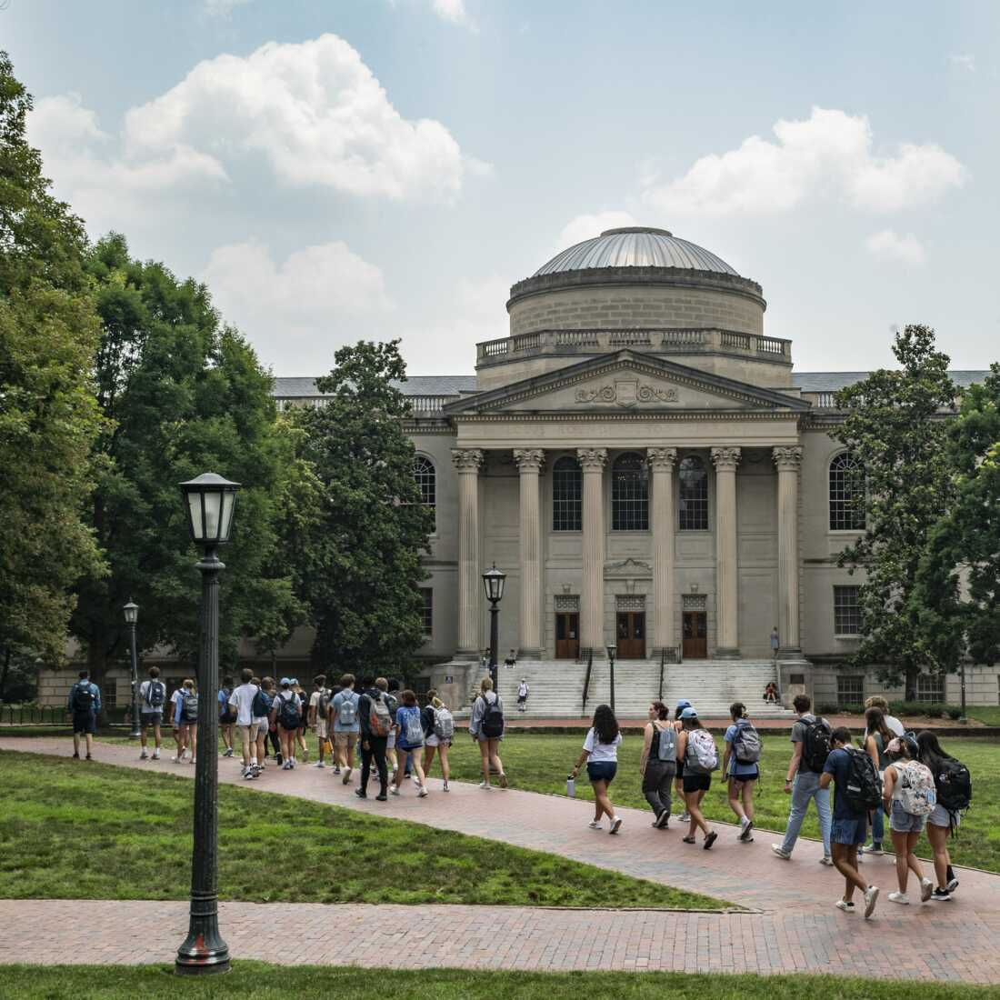
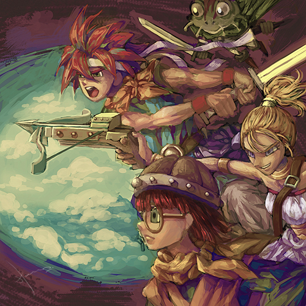
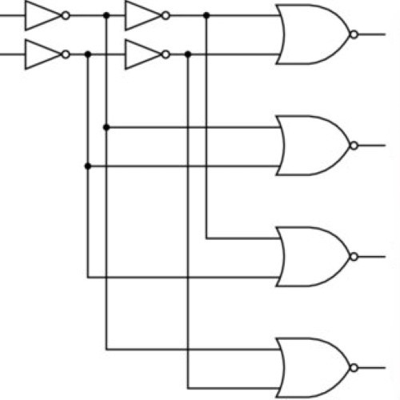
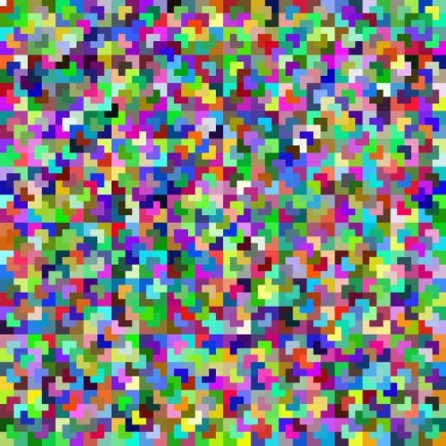

My projects over the years!
Data Leakage Detector
Collaborated with a senior design team to develop a VS Code extension for our university capstone project that identifies and corrects machine learning data leakage in Jupyter Notebooks through algorithmic and LLM-driven "Quick Fix" mechanisms.

AI Assistant
Developed a Retrieval-Augmented Generation/RAG-powered AI assistant, combining Pinecone' vector database with Meta's Llama 3.1, a large language model, to deliver context-aware insights on professors and courses.
Flashcards SaaS
Developed a dynamic web application that allows users to generate, manage, and study AI-generated flashcards. The web app features account authentication and payment using Next.js, React, Firebase, and Stripe.

Anime Web App
Collaborated with classmates on a full-stack web application using the MyAnimeList REST API to provide anime recommendations from a user's watched anime list, distinguishing itself from competitors focused on single title recommendations.

Virtual CPU
Designed a 64-bit CPU using Logisim Evolution and integrated it with a Node.js assembler for the ARMv8 instruction set to showcase proficiency in computer architecture.

Tile That Courtyard
Implemented a recursive algorithm in Racket to solve the MIT Tile the Courtyard Problem using a divide-and-conquer strategy, culminating in an aesthetically pleasing graphical representation.
Get in Touch
Please drop me a message if you would like to chat! You can also connect with me on social media below.